AI-enabled with your own key (OpenAI, Claude, Gemini or a private Ollama/Azure model): AI event writer,
natural-language website search, booking approval assistant, survey insights, document assistant and security
anomaly alerts.
Run events from Odoo and publish them anywhere. A headless REST API with signed webhooks for WordPress
(plugin included), IP-range and invitation-only events, department tagging, equipment time-slot booking with
approvals, versioned event folders, a full audit trail and a Save & continue later button for surveys.
One app that closes the gaps that appear in almost every Odoo Events project for associations, universities, corporates, chambers and agencies: the public website is WordPress, some events are private, equipment must be reserved and approved, event files need versions, auditors want a change log and long forms must be finishable later. Pure Community dependencies (Events, Website Events, Surveys) – no Enterprise Documents / Approvals / Appointments licence required.
Built from a real 40-user Odoo Events tender and a review of the Odoo App Store. Standard Odoo covers a lot; these are the gaps clients keep paying custom development for:
| Common requirement | Standard Odoo 19 | Typical App Store answer | Event Connect |
|---|---|---|---|
| Show Odoo events on WordPress / Next.js and refresh the site when an event changes | XML-RPC / JSON-2 only, no event-shaped API, no push | Generic REST or webhook framework – you still build the event payload, auth and WordPress side | ✔ Event-specific REST API, API keys, CORS, iCal feed, signed webhooks with retries + ready WordPress plugin |
| Private events: office network only, or by invitation | Public / Via link / Logged users | Calendar-meeting privacy apps (not website events) | ✔ IP / CIDR ranges and tokenised personal invitations, enforced on listing, page, registration and API |
| Department tagging of events | Generic tags only | – | ✔ Hierarchical departments with members & managers; website, API and backend filters |
| Book equipment by time slot, no pricing, with approval | Appointments (Enterprise) – people/rooms, no quantity approval | Separate booking apps, often priced/e-commerce based | ✔ Quantity-aware slot engine, consecutive-slot picker, approvers, activities, calendar, portal |
| Folder per event with version history | Documents (Enterprise) – no event folder, no version list | – | ✔ Event folder with sub-folders, immutable versions, restore, download log |
| Audit log with old/new values | Chatter tracking on some fields | Generic audit apps | ✔ Tamper-proof log: user, IP, old → new for events, bookings, documents, invitations, API |
| Save & continue later for surveys incl. anonymous | Resume only via same browser cookie | Internal-user oriented | ✔ Saves without validation, resume link + short code + "email me the link", for anonymous respondents |
Amazon SES / any SMTP, Email Marketing, Contacts and data migration are handled by standard Odoo and are intentionally not duplicated.
department, tag, type, from/to, q, when=upcoming|past|all, updated_since, sorting, paginationPOST registrations from your website, honouring seats and tickets/calendar.ics)curl -H "X-API-Key: zec_…" \ "https://erp.example.com/api/zivo/v1/events?department=hr&limit=10" GET /api/zivo/v1/ping GET /api/zivo/v1/events GET /api/zivo/v1/events/<id|slug> POST /api/zivo/v1/events/<id>/registrations GET /api/zivo/v1/departments GET /api/zivo/v1/tags GET /api/zivo/v1/calendar.ics Webhook headers: X-Zivo-Topic: event.updated X-Zivo-Signature: sha256=HMAC(secret, ts + "." + body)
static/wordpress/zivoit-event-connect.zip): settings page, [zivo_events limit="6" department="hr"] and [zivo_event id="12"] shortcodes, and a signed webhook receiver that flushes the cache the moment an event changes in Odoo.


Rules are enforced on the event listing, event pages, registration steps and the API. Event staff can always preview. A branded “private event” page is shown to everyone else.
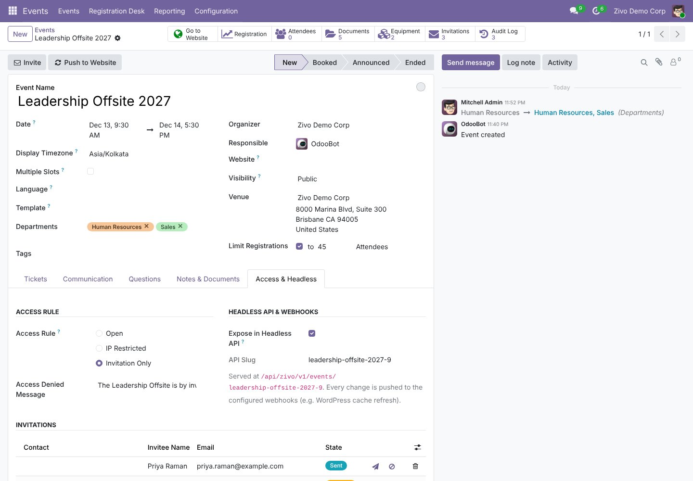


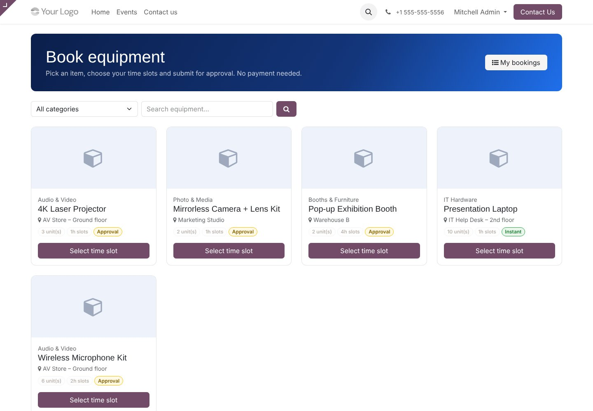


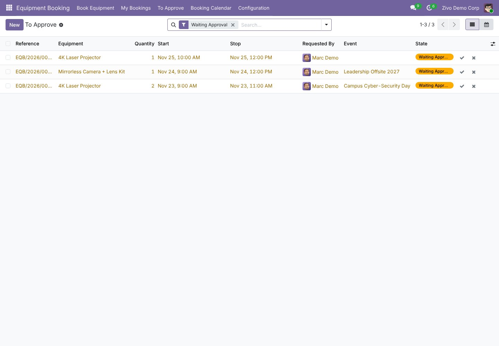
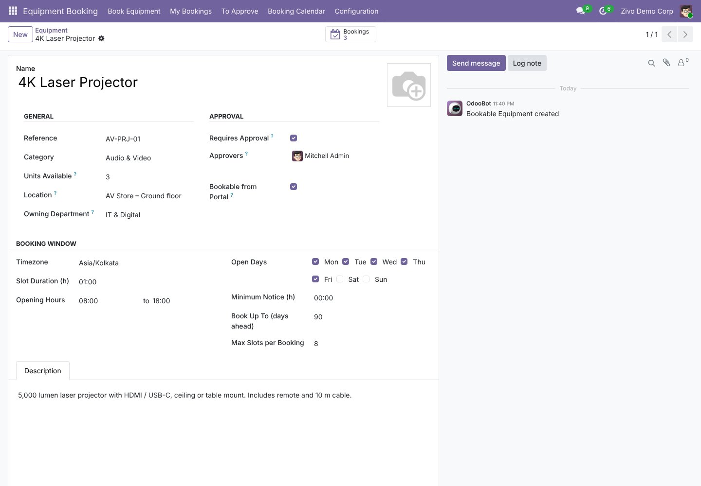

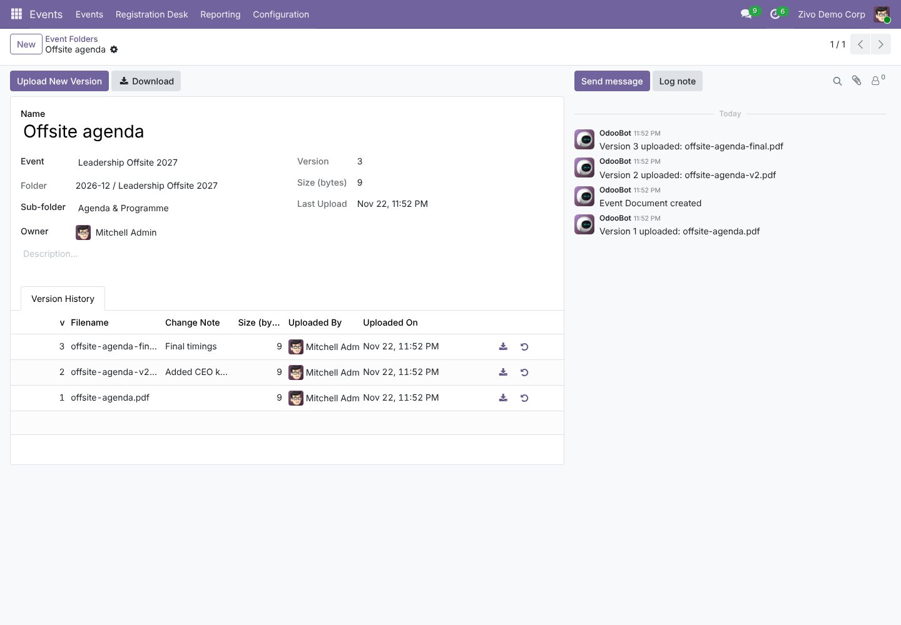
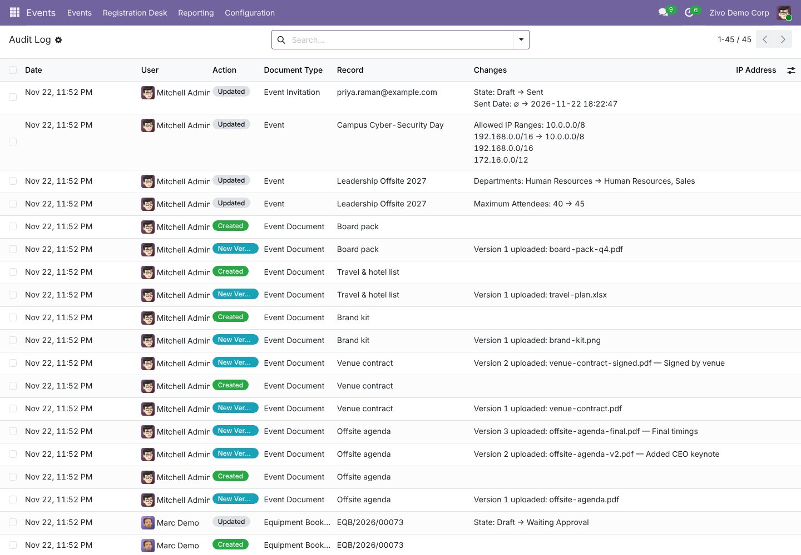
ABCD-1234) + “Email me the link”; public /survey-resume page; configurable validity

Bring your own key for OpenAI, Anthropic Claude, Google Gemini or any OpenAI-compatible endpoint (Azure OpenAI, Ollama, LM Studio, vLLM, OpenRouter) – including fully private, on-premise models. Works on Community – no Odoo Enterprise AI licence needed. Every AI output is a suggestion a person applies, every call is recorded in the AI usage log (tokens, duration, errors) and in the audit log, and each feature can be switched on or off.
| AI feature | What it does | Who benefits |
|---|---|---|
| ✍ AI Event Writer | From a few bullet points: subtitle, website description, SEO title & meta description, personal invitation e-mail and a social post, in any language and tone. Never invents prices or speakers. | Marketing |
| 🔎 Natural-language search | /api/zivo/v1/search?query=hr workshops in hyderabad next month → department, dates, city, tags and type filters. Falls back to keyword search when AI is off. | Website visitors |
| ✅ Booking approval assistant | Deterministic facts (free units, competing requests, weekly utilisation, requester history, linked event) + AI recommendation: approve, approve fewer units, reschedule or reject, with alternatives. One-click “Approve AI quantity”. Never over-approves. | Approvers |
| 📊 Survey insights | Executive summary, sentiment split, themes with example quotes and recommendations from free-text answers. Option to exclude anonymous answers. One-click reminder to respondents who saved and never came back. | Managers |
| 📄 Document assistant | Reads PDF, DOCX, TXT, CSV, HTML: summary, suggested sub-folder, key dates & obligations turned into event activities, and “what changed” between two versions. | Event operations |
| 🛡 Anomaly alerts | Hourly rules on the audit log (mass deletions, private event made open, very wide IP ranges, bulk downloads) with an AI risk assessment and next steps. | Administrators |


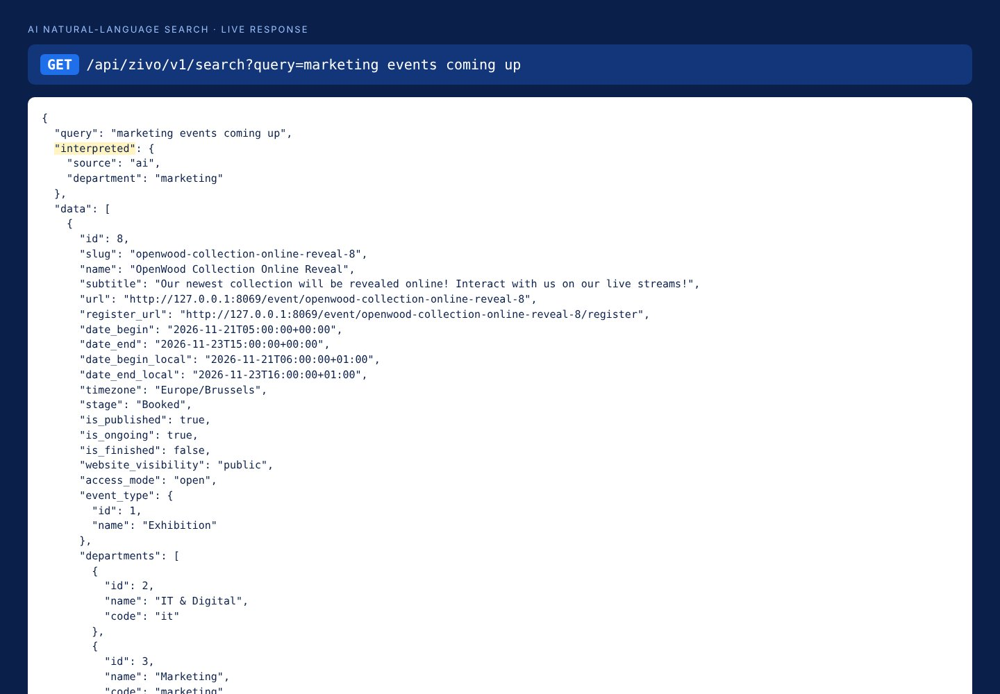

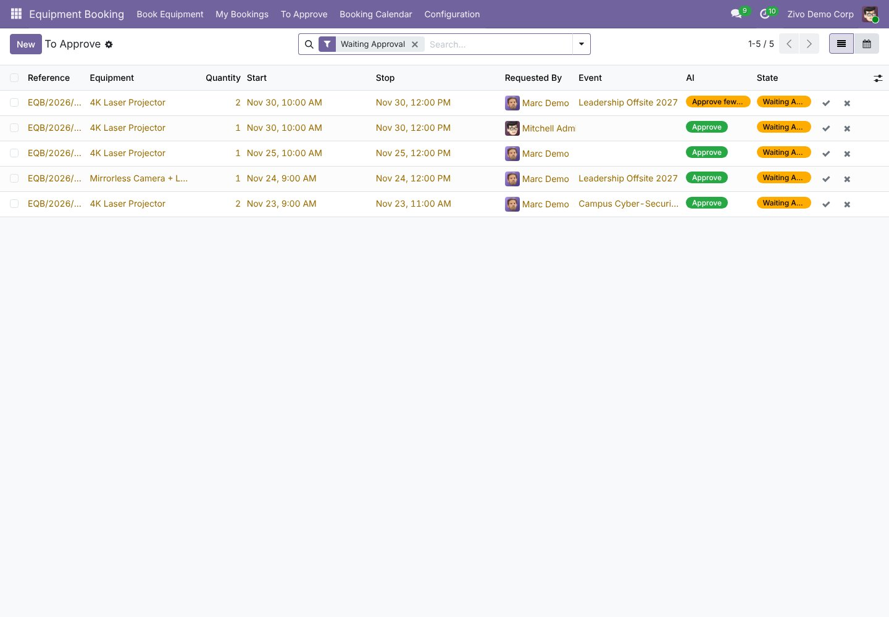
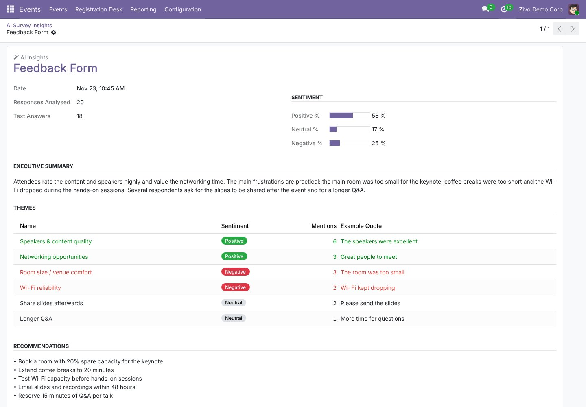
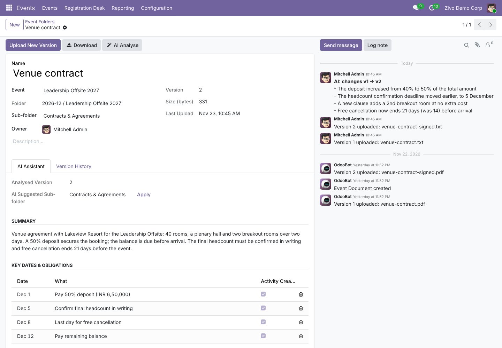

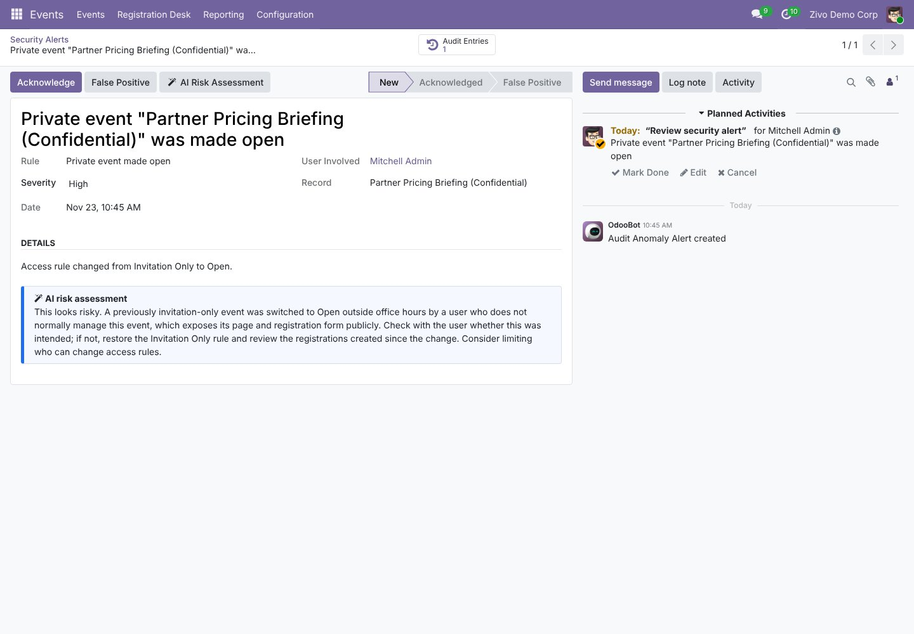
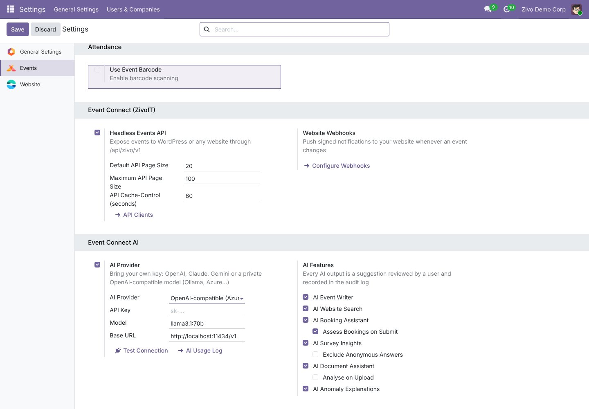

/wp-json/zivo/v1/webhook) and secret, click Send Test Ping./equipment.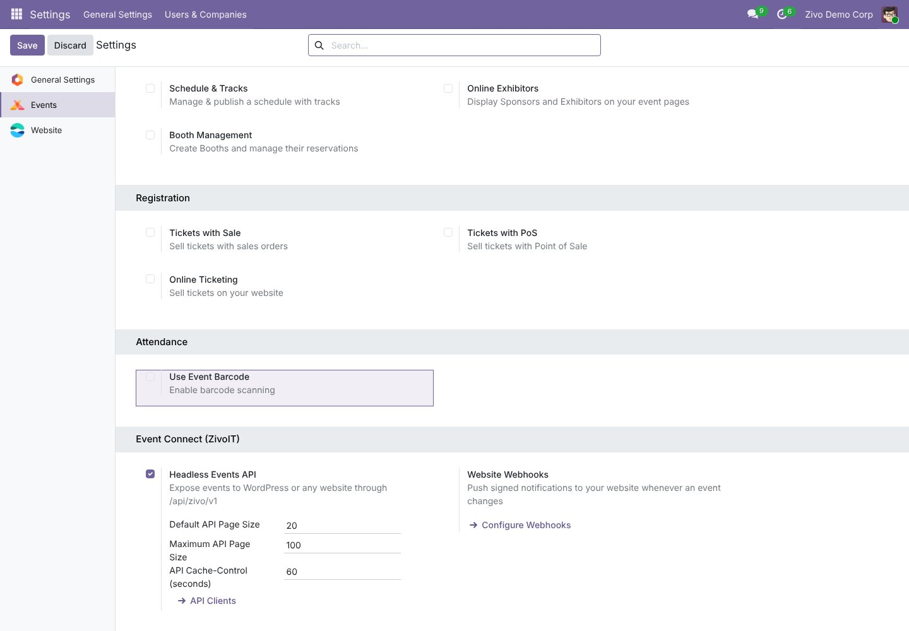
Does it need Odoo Enterprise?
No. It runs on Community and Enterprise, Odoo.sh and on-premise.
Is the IP restriction reliable behind a proxy?
Yes, when Odoo runs with proxy_mode = True the real client IP is used.
Can I use the API without WordPress?
Yes – any site, mobile app, Next.js, Webflow or n8n/Make flow can consume the JSON API and webhooks.
Does the AI send our data to a third party?
Only when a user clicks an AI action (or an auto option you enable), and only to the provider you configure. Choose an on-premise OpenAI-compatible model (e.g. Ollama) to keep everything in-house. AI is off until you enable it. Survey analysis sends only question titles and answer text – never the respondent's name or e-mail – and you can exclude anonymous answers completely.
Who pays for AI usage?
You use your own provider account; the AI usage log shows tokens per feature and user.
Is there any charge for booking equipment?
No. Equipment booking is deliberately price-free; it is an internal reservation and approval workflow.
Official Odoo Partner. Need installation, WordPress integration, data migration from your booking tool or email platform, or a custom extension? Our team will help.
✉ info@zivoit.com · 🌐 www.zivoit.com · ☎ +91 98665 71616